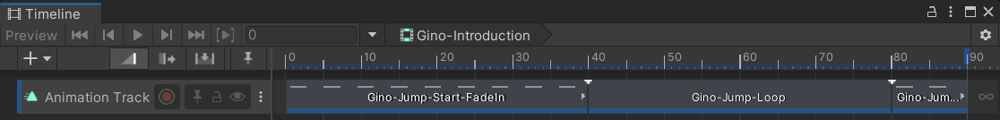
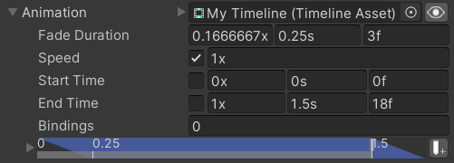
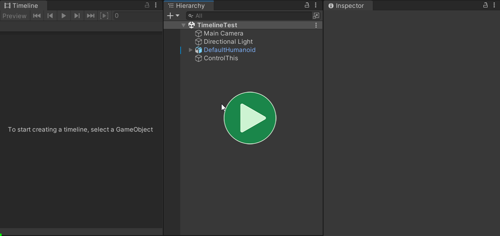
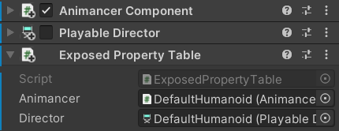
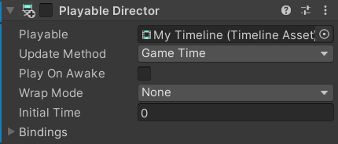

This is a Pro-Only Feature: you can try it out in the Unity Editor with Animancer Lite, but it will not be available in runtime builds unless you purchase Animancer Pro.
Unity's Timeline package is a sequencing system that can manage things like animations, audio, particle systems, and other events in order to develop things like cut-scenes and cinematics.
Disclaimer
Unfortunately, Timeline was not really designed for use outside of the PlayableDirector component and the limited documentation doesn't make any mention of how it should be handled, meaning that Animancer's implementation is based on quite a bit of guesswork (particularly the Bindings system). So feel free to use any of the Help links to ask questions and report bugs, but keep in mind that some issues simply can't be solved by Animancer.
Usage
Timeline Assets are normally played using a PlayableDirector but Animancer can also play them with a PlayableAssetState:
PlayableDirector |
PlayableAssetState |
|---|---|
Outside Animancer, Timeline Assets are played using a PlayableDirector component as explained in the official Timeline Tutorial. |
Inside Animancer, Timeline Assets are played using PlayableAssetStates as explained in the Introduction state of the Platformer Game Kit. |
| Even with Animancer, this is still often the best way to play Timelines that control multiple characters since there is usually no need for such things to interact directly with Animancer. | This is the recommended approach for Timelines that only control a single character that is already being controlled using Animancer since it fits right in with that character's other animation states. As with all other States, you can get aPlayableAsset timeline; and manually create a new PlayableAssetState(timeline);, but Transitions (specifically PlayableAssetTransition) are often easier to use, especially if the Timeline has tracks that require Bindings. |
Example
Instructions for creating Timeline Assets can be found in the Timeline Documentation and the official Timeline Tutorial so it will not be explained here.

Once you have created a Timeline Asset, using it in Animancer is just as easy as playing a single AnimationClip. You simply use a PlayableAssetTransition or PlayableAssetState instead of the usual ClipTransition or ClipState.
| Code | Inspector |
|---|---|
|
 The fields here are the same as other Transitions except for theBindings field which is explained below. |
The Platformer Game Kit uses a Timeline for its Introduction State.
Bindings
Timelines can contain multiple "Tracks" which each control a different object in the scene. Since a TimelineAsset is an asset, it can't directly reference scene objects so whatever plays it needs to specify its bindings to assign the object each track controls.
- The easiest way to assign the bindings is to use a
PlayableAssetTransitionwhich shows fields for them in the Inspector, but you can also access thePlayableAssetState.Bindingslist in scripts. - The
Animatorcomponent being used by Animancer should never be assigned as a binding because that would take control away from Animancer and not return it afterwards. The system will log a warning if this happens. - If the first track of the
TimelineAssetused in aPlayableAssetStateis an Animation Track, it will automatically be applied to theAnimatorplaying that state so you do not need to set a Binding for it. - Using a Markers track requires a
PlayableDirectorcomponent to be attached to the same object as theAnimatoreven though the Timeline is being played through Animancer.
Exposed References
Some Timeline tracks such as Control Tracks can actually control multiple objects which means they can't use Bindings because there's only one of those per track. Instead, they use a separate Exposed References system which is actually hidden inside the PlayableDirector component. The following video shows how you can assign a reference and can then see it in the PlayableDirector if you set the Inspector to Debug mode:

Unfortunately, this is one of the parts of Timeline which is directly tied to the PlayableDirector component so it's not possible for Animancer to store its own Exposed References. But it's at least possible to have a PlayableDirector just for storing Exposed References and tell Animancer's PlayableGraph to use it by simply adding an ExposedPropertyTable component (which will automatically disable the PlayableDirector):

The Timeline window works differently depending on what you select:
- If you select a
TimelineAssetin the Project window, you won't be able to edit its Control Tracks properly because it won't know where to get or store the Exposed References (they can't be stored in the asset because assets can't reference scene objects). - If you select a
GameObjectwith aPlayableDirectorin the scene, then its Exposed References will be accessible in the Timeline window.
So if you want to edit the Exposed References used by a particular TimelineAsset, you can simply assign it to the Playable field on the PlayableDirector even if that component is disabled because you want to play the Timeline through Animancer instead:

Note that Exposed References are never cleared. That means it won't lose the references if you assign a different TimelineAsset to edit, but it also means that references won't be removed even if nothing is using them (unless you manually remove them using the Inspector in Debug mode).